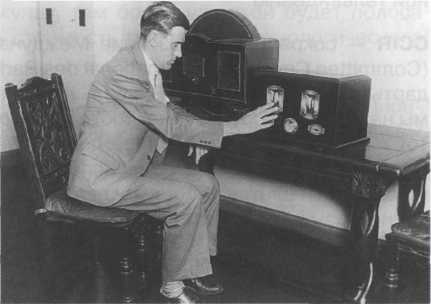
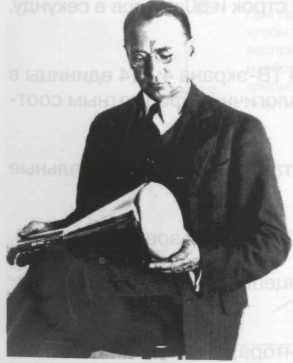

БЛОГ ВЛАДИМИРА КОЛЕСНИЧЕНКО
Охранно-пожарная автоматика и охранное видеонаблюдение
Радио-технологические штучки и мистер Никола Тесла

Видеонаблюдение
Общие характеристики телевизионных систем
В этой главе рассматриваются теоретические основы видеосигналов, ширина полосы пропускания частот и разрешение. Глава предназначена для технических специалистов, желающих знать, каковы ограничения ТВ-системы вобще и системы видеонаблюдения в частности.
Немного истории
 В 1903 году публике был показан первый фильм, Большое ограбление поезда, созданный в лаборатории Томаса Эдисона (Edison Laboratories). Это событие ознаменовало собой начало кинематографичской революции. Концепция телевидения, которая считается более молодой по сравнению с идеей кино, раз рабатывалась, тем не менее, уже в конце XIX в. Все началось в 1817 г. с открытия шведским физиком Джонсом Берцелиусом элемента селена и фотоэлектричества. Он обнаружил что количество электрического тока, вырабатываемого селеном под действием света, зависит от количества падающего на него света. В 1875 году американский изобретатель Кейри (G. R. Carey) собрал самую первую, довольно грубую, телесистему, в которой для формирования сигнала он использовал группы фотоэлементов. Сигнал воспроизводился на блоке из электроламп, каждая из которых излучала свет, пропорциональный количеству света, падающего на фотоэлементы. Позднее в эту концепцию были внесены незначительные изменения вроде представленного П. Нипковым (Nipkow) в 1884 г. «развертывающего диска», в котором элементы сканировались механически вращавшимся диском с отверстиями, выстроенными в спираль. В 1923 г. была осуществлена первая практическая передача изображения по проводам - сначала Байрдом (Baird) в Англии, и чуть позднее Дженкинсом (Jenkins) в Соединенных Штатах. Первая телепередача транслировалась в 1932 г. компанией ВВС в Лондоне, а экспериментальные телепередачи осуществлялись берлинской компанией Fernseh, которую возглавлял изобретатель электроннолучевой трубки (ЭЛТ) профессор Манфред фон Арденн. Владимир Зворыкин, инженер российского происхождения, в 1931 г. разработал первую ТВ-камеру, известную под названием «иконоскоп» и работавшую по тому же принципу, что и появившиеся позднее камеры с передающей трубкой и электронно-лучевая трубка (ЭЛТ).
 Обе эти технологии, кино и ТВ, для достижения эффекта движения воспроизводят много неподвижных изображений в секунду. Однако в ТВ неподвижные изображения проецируются не световым проектором через целлулоидную пленку, как в кино, а при помощи электронно-лучевого сканирования. Изображения формируются строка за строкой, подобно тому как мы читаем книгу, слева направо и сверху вниз (если смотреть со стороны ЭЛТ). Важную роль во всем этом процессе играет послесвечение люминофора, покрывающего ЭЛТ монитора. Оно зависит от типа люминофорного покрытия и яркости экрана.
Основы телевидения
Сегодня в мире существует и используется несколько различных ТВ-стандартов. Рекомендации CCIR/PAL используются на большей территории Европы, в Австралии, Новой Зеландии, большинстве стран Африки и Азии. Аналогичная концепция используется и в рекомендациях EIA/NTSC для ТВ-стандарта, используемого в США, Японии и Канаде, а также в рекомендациях SECAM, используемых во Франции, России, Египте, некоторых бывших французских колониях и странах Восточной Европы. Главное различие между этими стандартами заключается в числе строк развертки и частоте кадров.
Прежде чем приступить к рассмотрению основных принципов телевидения, давайте разберемся в терминологических аббревиатурах, используемых в различной технической литературе, посвящен ной телевидению:
-
CCIR - сокращенное название Международного консультативного комитета по радиовещанию
(Committee Consultatif International des Radiotelecommunique). Это комитет, устанавливающий стан-
дарты для черно-белого ТВ в большинстве стран Европы, Австралии и других странах. Вот почему
мы называем оборудование, соответствующее стандартам черно-белого ТВ, CCIR-совместимым.
Тот же тип стандарта, позднее дополненный сигналами цветности, был назван стандартом PAL.
Название ему дала концепция, используемая для воспроизведения цвета попеременными фазовы
ми сдвигами цветовой поднесущей на каждой новой строке. Отсюда и название «построчное изме
нение фазы» (phase alternate line — PAL). - EIA расшифровывается как Electronics Industry Association (Ассоциация Электронной Промышлен ности). Эта ассоциация разработала стандарт для монохромного ТВ в США, Канаде и Японии, где его часто называют RS-170 — по коду рекомендательного предложения EIA. Когда монохромное ТВ приобрело цвет, оно получило название по имени группы, разработавшей стандарт: Национальный комитет по телевизионным стандартам (National Television Systems Committee — NTSC).
- SECAM - аббревиатура французского названия Sequentiel Couleur avec Memoire, которое фактичес ки описывает принцип передачи цвета: последовательность сигналов цветности и необходимость запоминающего устройства в ТВ-приемнике для декодирования цветовой информации. SECAM, изначально запатентованный 1956 изобретателем по имени Анри де Франс, фактически был первым аналоговым стандартом цветного телевидения, где использовалось 819 строк и 50 кадров в секунду. Позднее в SECAM стали использовать 625 строк.
Во всех ТВ-стандартах рекомендуемым является формат изображения ТВ-экрана 4:3 (4 единицы в ширину и 3 единицы в высоту). Это объясняется, главным образом, аналогичным форматным соот ношением для кинопленки, принятым еще на заре телевидения.
Неодинаковое число строк, используемых в различных ТВ-стандартах, определяет остальные характеристики системы.
EIA рекомендует 525 строк, a PAL и SECAM используют 625 (раньше SECAM использовал 819 строк)
Независимо от этих различий все системы используют одну и ту же концепцию построчного создания изображения электронным лучом.
Когда видеосигнал, произведенный камерой, передается на вход монитора, флуктуации напряже
ния преобразуются в флуктуации потока электронов в электронном луче, который бомбардирует
люминофорное покрытие ЭЛТ в процессе построчной развертки. Люминофорное покрытие гене-
рирует свет пропорционально количеству электронов, которое пропорционально колебаниям
напряжения. А эти колебания, конечно же, пропорциональны световой информации, попадающей
на ПЗС-матрицу.
Люминофорное покрытие монитора также обладает определенным послесвечением, то есть гене рируемый лучом свет не исчезает немедленно вместе с исчезновением луча. Люминофор продол жает излучать свет еще в течение нескольких миллисекунд. Это значит, что ТВ-экран освещается яркой полосой, которая перемещается по нисходящей на определенной скорости.
Чем больше используется строк и больше кадров в секунду, тем более широкой будет полоса пропускания частот видеосигнала, что и будет диктовать стоимость телекамер, технологического оборудования, передатчиков и приемников.
Скорость обновления кадра, то есть число кадров в 1 секунду, была установлена исходя из инерцион ности зрительного восприятия человека и яркости ЭЛТ. Теоретически, идеальным вариантом были бы 24 кадра в секунду — из-за сочетаемости такого числа и с форматом кино, и с телевидением (широко использовались в первые годы существования телевидения). Однако фактически, это оказалось невозможно по причине высокой яркости, которую дает люминофор ЭЛТ и которая вызывала мерца ние изображения (относительно расстояния от зрителя до экрана, см. рис. 4.3).
В результате многочисленных экспериментов выяснилось, что для устранения мерцания требова лось, по крайней мере, 48 кадров в секунду. Такое количество кадров было бы удобно использовать, поскольку оно тождественно частоте кинопроектора, и, соответственно, можно легко конвертиро вать кино в телевизионный формат. Однако это число принято не было. Телеинженеры выбрали вариант 50 кадров в секунду по стандарту CCIR и 60 кадров в секунду по стандарту EIA. Эти цифры достаточно высоки, чтобы человеческий глаз не замечал мерцания, но еще важнее, что они совпа ли с промышленной частотой в 50 Гц, используемой во всей Европе, и частотой в 60 Гц, используе мой в США, Канаде и Японии. Причиной тому была электронная схема ТВ-приемников, которые первоначально в большой степени зависели от промышленной частоты. Если бы был принят фор мат в 48 кадров, то разница в 2 Гц для CCIR и 12 Гц для EIA вызвала бы множество помех и перебо ев в процессе развертки изображения.
Тем не менее, серьезной оставалась проблема, как воспроизвести 50 (PAL) или 60 (NTSC) кадров в секунду, реально не увеличивая начальную частоту сканирования камеры, равную 25 (то есть 30) кадрам в секунду. Дело не в том, что частоту сканирования камеры нельзя удвоить, а в том, что придется увеличить полосу пропускания видеосигнала, тем самым увеличив, как уже говорилось, стоимость электроники. К тому же, надо помнить о вещательных телеканалах, которые в этом случае должны быть шире, и, следовательно, меньше каналов было бы доступно для использования (без помех) в зоне выделенной частоты.
Все перечисленные факторы заставили инженеров использовать уловку, подобную мальтийскому механизму, используемому в кинопроецировании, благодаря чему 50 (60) кадров можно воспроиз водить без реального увеличения полосы пропускания. Название этой уловки — чересстрочная развертка.

Вместо того, чтобы составлять изображения из 625 (525) горизонтальных строк прогрессивной разверткой, было решено чередовать развертку нечетными и четными строками. Другими словами, вместо того, чтобы посредством одной прогрессивной развертки 625 (525) строк воспроизводить один ТВ-кадр, этот кадр был разделен на две половины, одна из которых состояла только из нечетных линий, а вторая — только из четных. Они развертывались таким образом, что строки одного полукадра попадали точно между строк другого. Вот почему такая развертка называется чересстрочной. Все строки каждой половины — в случае CCIR сигнала их 312.5, в NTSC их 262.5 — формируют так называемое ТВ-поле. В системах CCIR и SECAM 25 нечетных полей и 25 четных полей, в системе EIA - по 30. В общей же сложности одно за другим, каждую секунду, быстро движутся 50 полей в секунду (в EIA 60).
Нечетное поле вместе с последующим четным составляет так называемый ТВ-кадр. Таким образом, каждый CCIR/PAL и SECAM сигнал состоит из 25 кадров в секунду, или 50 полей. Каждый EIA/NTSC сигнал состоит из 30 кадров в секунду, что эквивалентно 60 полям.
Фактическая развертка на экране монитора начинается в верхнем левом углу со строки 1, затем переходит на строку 3, оставляя место между 1 и 3 строками для строки 2, которая должна появ ляться, когда начинается сканирование четных строчек.


Видеосигнал и его спектр
В этом разделе рассматриваются теоретические основы ограничений видеосигнала, полосы пропускания и разрешения. Это сложный предмет, требующий знания высшей математики и электроники, но я постараюсь объяснить его на простом и доступном языке.
Большинство искусственных электрических сигналов можно описать математически. Для периоди ческих сигналов, например, таких, как в линиях энергоснабжения, математическое описание очень простое. Периодическую функцию всегда можно представить в виде суммы синусоидальных коле- баний, каждое из которых может иметь различную амплитуду и фазу. По аналогии со спектром белого света, она называется спектром электрического сигнала. Чем более периодичен элек трический сигнал, тем легче можно его представить и с меньшим количеством компонентов сину соидальных колебаний. Каждый компонент синусоидального колебания можно представить дискретным значением в спектре частот сигнала. Чем менее периодична функция, тем больше ком понентов потребуется для воспроизведения сигнала. Теоретически, даже непериодическую функ- цию можно представить в виде суммы различных синусоидальных колебаний, но только в этом случае придется суммировать намного больше этих колебаний, чтобы получить непериодический результат. Другими словами, спектральное представление непериодического сигнала будет иметь полосу пропускания, более плотно заполненную различными компонентами. Чем мельче детали сигнала, тем выше частоты в спектре сигнала. Очень мелкие детали видеосигнала будут представ лены высокочастотными синусоидальными колебаниями. Это равнозначно информации высокого разрешения. У сигнала, наполненного высокими частотами, более широкая полоса частот. Даже единственный, но очень резкий импульс, будет иметь очень широкую полосу частот.